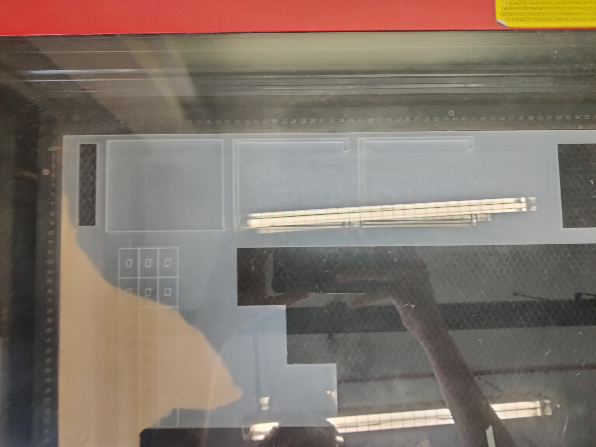

It being a Calculator I wanted it to be small enough such that it can be portable and be held easily. However. taking into account that the jumper wires take up quite a fair bit of space, I had to make it slightly bulkier.
Bill-Of-Materials
3D Model
I measured the size of the Arduino and LCD and designed the 3D model similar to my concept sketch and to fit the Arduino and LCD screen.
Cardboard Prototype
I wanted to make sure everything fits so I made a Cardboard prototype to see how my Arduino and LCD screen fits. After testing, I made some adjustments to my 3D model to give more room for wires in the calculator head.
Laser Cutting and 3D Printing

I used the bodies from my 3D model to get the .dxf files to laser cut and make .stl for 3D printing slicing. I then glued all the components together aside from the top acrylic layer as I want the components to be accessible.
Code
Testing the Circuit
Before I put everything together, I tested out my components to see if everything works.
Final Product
You may notice that the numpad and LCD screen is upside down. The reason for that is that I did not take into account the horizontal length the I2C module at the back of the LCD takes up so I had to flip it. As a result, I had to flip everything else.